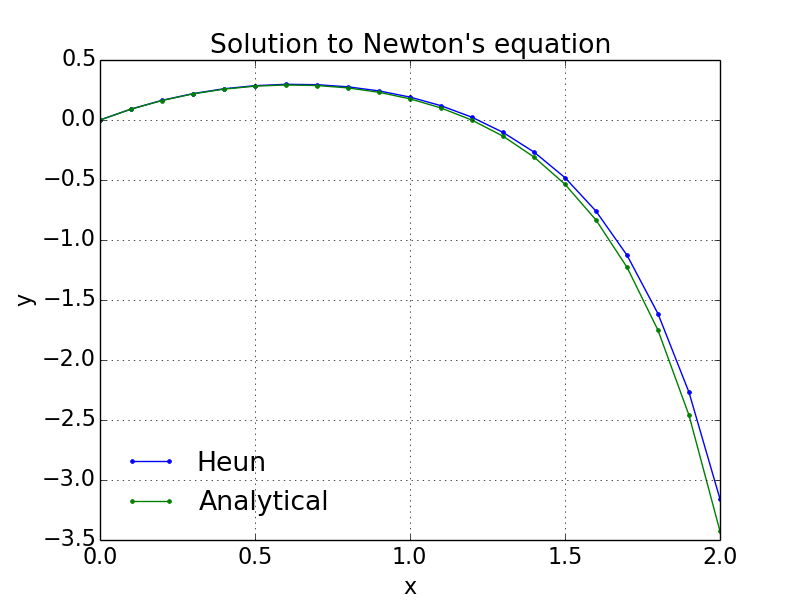

Let's use Heun's method to solve Newton's equation from the section Introduction, $$ \begin{equation} \tag{60} y'(x)=1-3x+y+x^2+xy,\ y(0)=0 \end{equation} $$ with analytical solution $$ \begin{align} y(x)=&3\sqrt{2\pi e}\cdot \exp\left(x\left(1+\frac{x}{2}\right)\right)\cdot \left[\mbox{erf}\left(\frac{\sqrt{2}}{2}(1+x)\right)-\mbox{erf}\left(\frac{\sqrt{2}}{2}\right)\right]\nonumber \\ +&4\cdot \left[1-\exp\left(x\left(1+\frac{x}{2}\right)\right)\right]-x \tag{61} \end{align} $$
Here we have \( f(x,y)=1-3x+y+x^2+xy = 1+x(x-3)+(1+x)y \)
The following program NewtonHeun.py solves this problem using Heun's method, and the resulting figure is shown in Figure 7.
# chapter1/programs_and_modules/NewtonHeun.py
# Program Newton
# Computes the solution of Newton's 1st order equation (1671):
# dy/dx = 1-3*x + y + x^2 +x*y , y(0) = 0
# using Heun's method.
import numpy as np
xend = 2
dx = 0.1
steps = np.int(np.round(xend/dx, 0)) + 1
y, x = np.zeros((steps,1), float), np.zeros((steps,1), float)
y[0], x[0] = 0.0, 0.0
for n in range(0,steps-1):
x[n+1] = (n+1)*dx
xn = x[n]
fn = 1 + xn*(xn-3) + y[n]*(1+xn)
yp = y[n] + dx*fn
xnp1 = x[n+1]
fnp1 = 1 + xnp1*(xnp1-3) + yp*(1+xnp1)
y[n+1] = y[n] + 0.5*dx*(fn+fnp1)
# Analytical solution
from scipy.special import erf
a = np.sqrt(2)/2
t1 = np.exp(x*(1+ x/2))
t2 = erf((1+x)*a)-erf(a)
ya = 3*np.sqrt(2*np.pi*np.exp(1))*t1*t2 + 4*(1-t1)-x
# plotting
import matplotlib.pylab as py
py.plot(x, y, '-b.', x, ya, '-g.')
py.xlabel('x')
py.ylabel('y')
font = {'size' : 16}
py.rc('font', **font)
py.title('Solution to Newton\'s equation')
py.legend(['Heun', 'Analytical'], loc='best', frameon=False)
py.grid()
py.savefig('newton_heun.png', transparent=True)
py.show()
Figure 7: Velocity of falling sphere using Euler's and Heun's methods.
